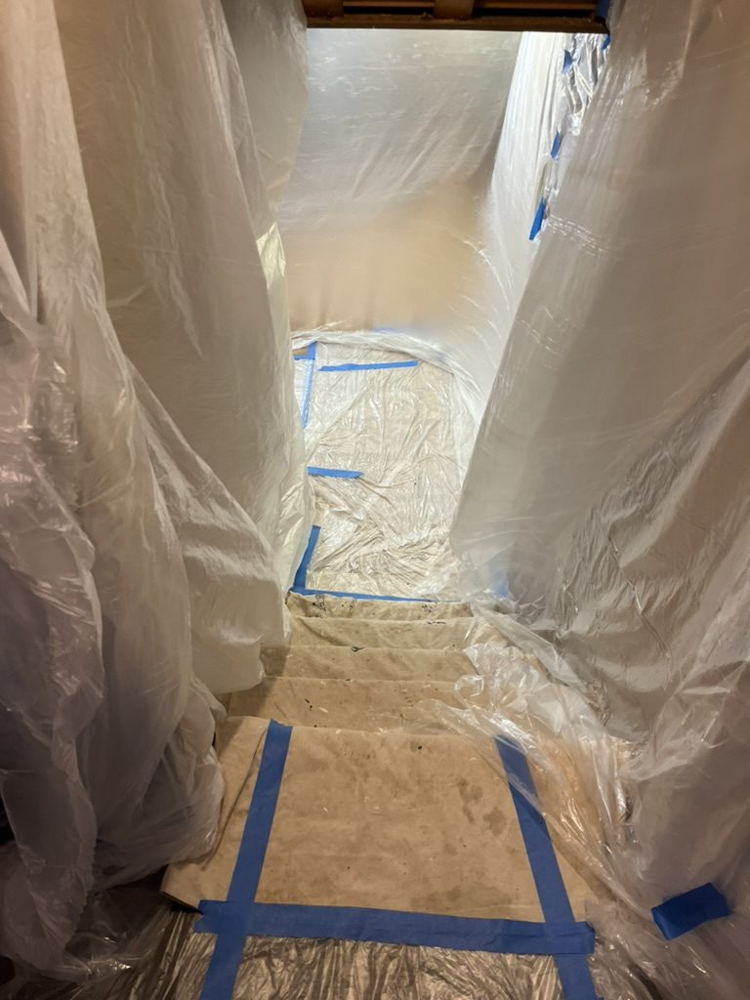
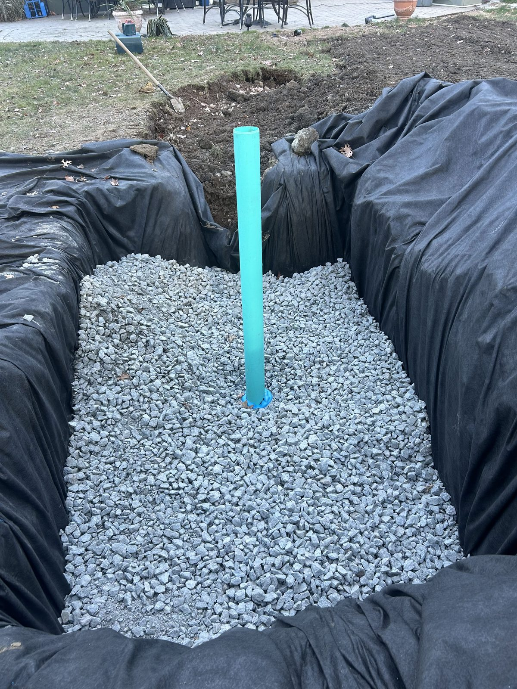

Dry basement, or we have not finished the job.
ARD Waterproofing dispatches from West Caldwell to serve homeowners across West Essex, Union, Passaic, and Morris Counties. Owner David Roth inspects and prices every property himself.
We handle interior french drains, sump pumps, foundation waterproofing and nine more services across New Jersey.
- Same-day emergency service
- 100% lifetime guarantee
- NJ licensed and insured
- 12% military and first responder discount
ARD's own footage, from the live site.
Rated 5.0 by New Jersey homeowners
ARD is not a franchise routing leads through a call center. It is a New Jersey outfit, founded in 2015, whose owner still shows up to look at your foundation.
He came out within 24 hours, had a detailed estimate for me that evening that didn't just explain what they were going to do but why it was required. The lifetime warranty made me feel extra confident that they knew what they were doing. David checked in a couple of times during the job and his foreman Alex kept me informed.
We worked with the ARD Waterproofing Company to install French Drains and a sump pump when our basement flooded numerous times. ARD was extremely helpful, professional and efficient. The project was completed in the time promised and we are happy with the results.
Everything went incredibly well. Men who worked on the job were skilled and respectable. The owner of the company was easy to deal with, honest, personable. I recommend 100%.
Water does not stop at the wall. It waits.
Clay-heavy soil, a high water table in low-lying areas, and Northeast storm systems create hydrostatic pressure that standard sealants cannot address long term.
- Water along the wall-floor joint after sustained rainfall
- A chalky white line on the block where water sat
- A sump pump cycling when it has not rained in a week
- Musty air upstairs that no dehumidifier fixes
- Grading and gutters feeding runoff toward the foundation
- Horizontal cracking in block walls after repeated freeze and thaw


Interior, exterior, or sump. The inspection decides.
Conflicting advice usually reflects a company's preferred product, not your home's drainage profile. These three solve different root causes.


How a waterproofing job runs
You hear back within the hour
Call or text any time. ARD is open 24 hours for active flooding.
David Roth visits, usually next day
He walks the property, assesses where water enters, and identifies the root cause.
The inspection sets the scope
Hydrostatic pressure, failed grading, an undersized pump, or a combination. The recommendation is what the job needs.
The crew works and cleans up
Interior drains often finish in a day. Patio sections are rebuilt if disturbed and the site is left neat.

Excavation is the honest part of this trade.
ARD holds NJ HIC License #13VH12460700 from the New Jersey Division of Consumer Affairs. Permits are pulled before work begins and every installation meets local building code for your county.
David Roth founded ARD in 2015 after more than 20 years focused solely on foundation waterproofing and drainage.
See recent jobsContact ARD Waterproofing in West Caldwell, NJ
Free estimate, free drainage design and advice, and a free consultation. ARD is open 24 hours for emergency basement flooding across Passaic, Morris, Union, and West Essex Counties.
Dashed towns are served but do not have a page yet. See all service areas.